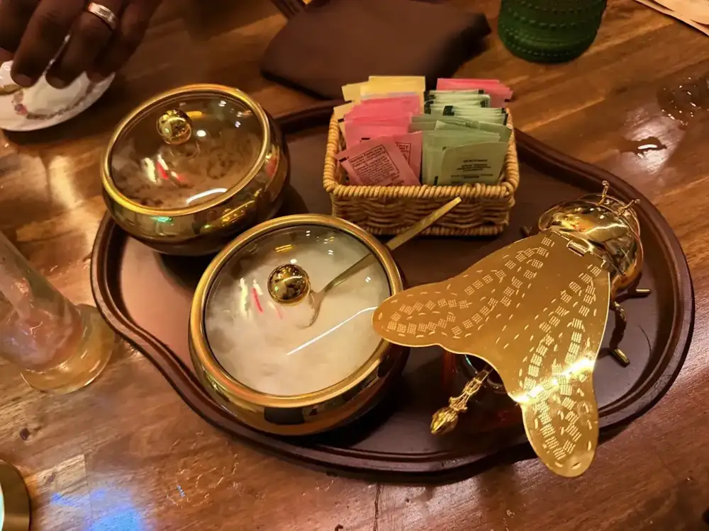
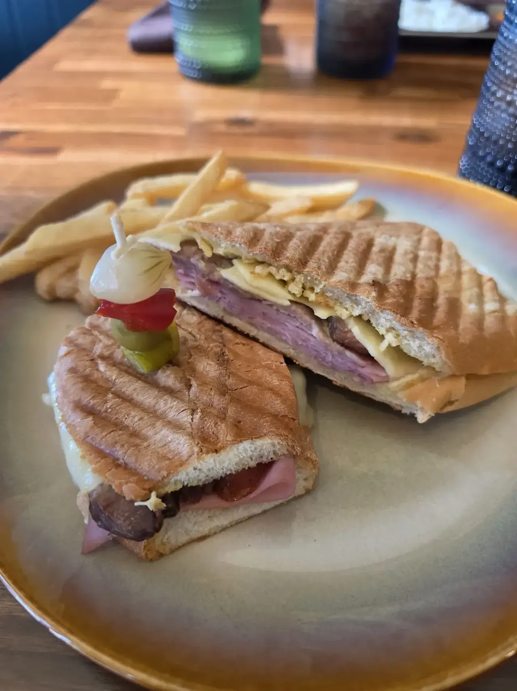
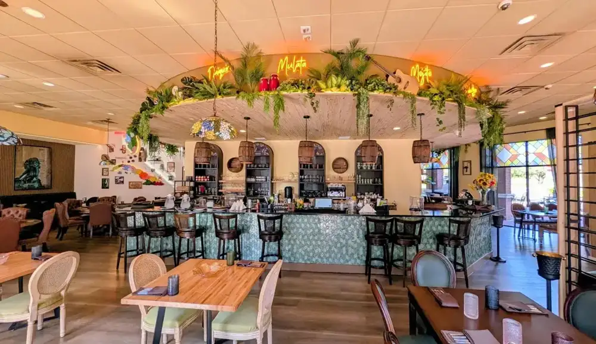
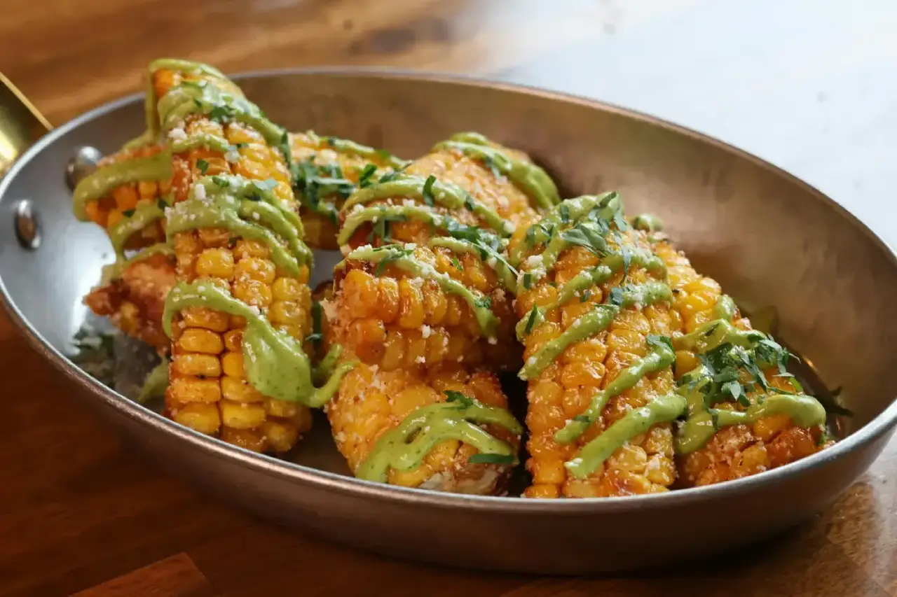
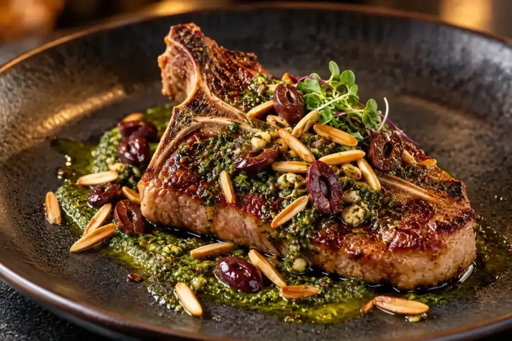
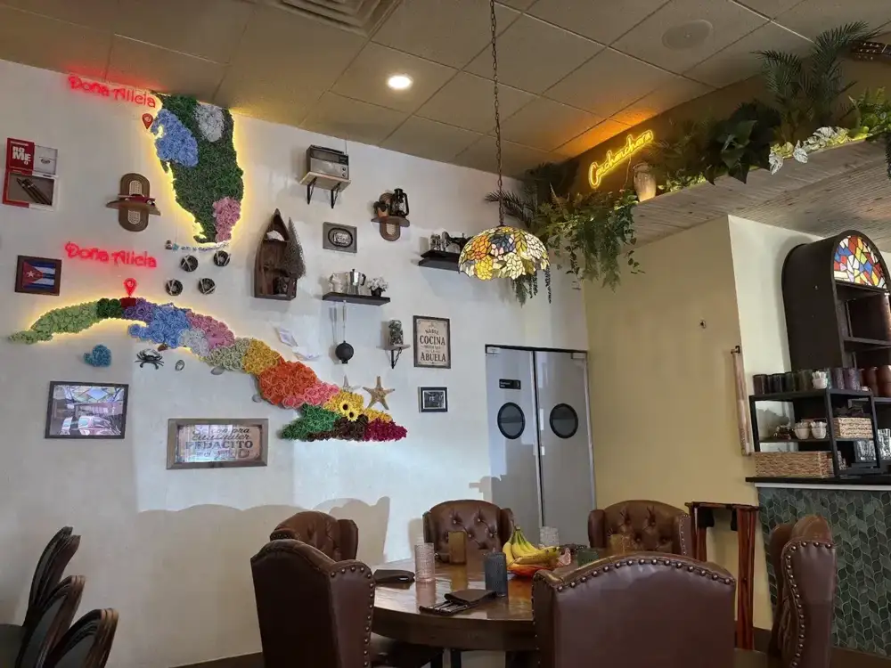
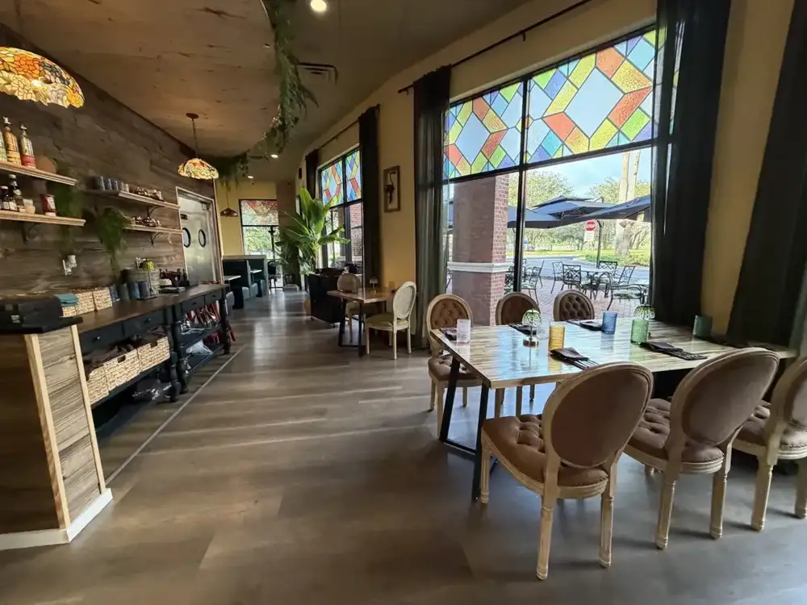
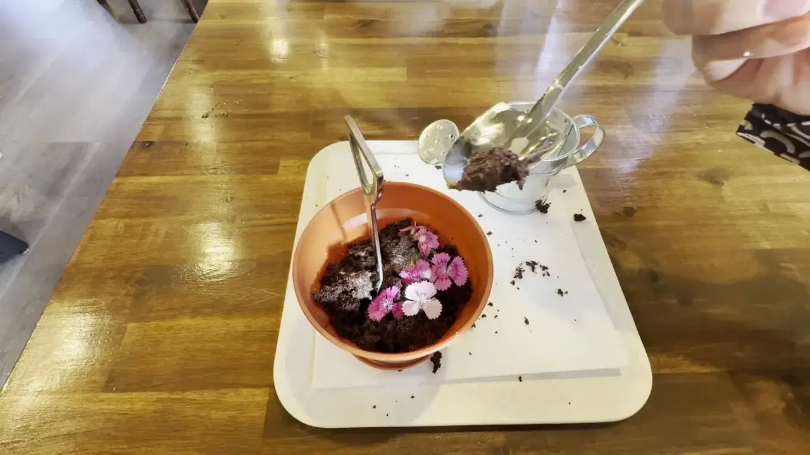

Dine at the table
Ropa vieja with black beans, white rice and sweet plantains, snapper fillet over lemon-cilantro risotto, and a Cuban sandwich.
HoursMon Closed
Creative Cuban cuisine · Westchase, Tampa

Ropa vieja, yuca bites with guava sauce and snapper over lemon-cilantro risotto, brought to Linebaugh Avenue from the Doña Alicia that opened in Havana in 2017.
Traditional Cuban dishes, reinterpreted
Guests keep coming back to the ropa vieja, the Cuban sandwich and the guava and cheese pudding.
Ropa vieja with black beans, white rice and sweet plantains, snapper fillet over lemon-cilantro risotto, and a Cuban sandwich.

Guests come for the coffee and the guava and cheese pudding, even if it is just for a coffee.

Enjoy the dishes at home, freshly prepared. You can also send food to family in Havana through the sister site.






4.7 ★ from 161 Google reviews
Doña Alicia is a Westchase gem! The food is full of flavor, made with real care, and the flavors of Cuba, on point. The staff treated us like family from the moment we walked in. Hard to pick a favorite, but the Ropa Vieja is a great dish to start with, amazing. We'll be back soon. Support local! ⭐⭐⭐⭐⭐
Doña Alicia is a Westchase gem! The food is full of flavor, made with real care, and the flavors of Cuba, on point. The staff treated us like family from the moment we walked in. Hard to pick a favorite, but the Ropa Vieja is a great dish to start with, amazing. We'll be back soon. Support local! ⭐⭐⭐⭐⭐
Great Cuban food experience on this brand new place.Jose recommended several dishes. Ropa vieja and the white rice was delish. The appetizer, Yuca bites with Guava sauce was amazing we shall return for sure.
This place is absolutely amazing. The owners and managers of the restaurant are so friendly and the service was absolutely wonderful. I definitely recommend this place to anybody, the atmosphere is wonderful it feels so fancy. The decoration, the presentation, the menu was all beautiful and it has so much character.

Our story
Doña Alicia Tampa believes the best cuisine is born around a table, where family shares stories, laughter and traditions. Inspired by Grandma Alicia, the kitchen honors Cuban roots while reinterpreting each recipe with contemporary techniques and presentations.
The story began in Havana in 2017 with the first Doña Alicia, and the same essence now crosses the water to Westchase. Guests notice the details: the decor inspired by Cuban nostalgia, the glassware and the presentation of every dish.
Come by
9664 W Linebaugh Ave, Tampa, FL 33626
Closed Mondays. Open Tuesday through Sunday from 11:30 AM to 10 PM. Call to reserve a table.